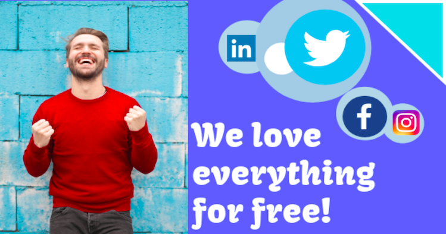

Here are a few of our suggestions of the available tools to help you make the most of social media.
This tool is a search engine, and it includes features such as what keywords have more performance in social media. If you ever wanted to discover the most used hashtags, then this can make your dream come true. It also gives information of the most used hashtags, the most active users and their behaviour, which helps you to have a better idea of what type of content the charity should be focusing on to attract more audience.
It is free to use and have access to what is happening on social media in real time, by only using keywords.
This social media management tool is free for the use of one individual and 3 social profiles. However, it offers additional payable plans that allows you to add more team members or profiles. A positive aspect is that it gives discount for charities, they offer 50% off on any of their plans.
It allows any organisation to manage all their main social media networks such as Twitter and LinkedIn at the same time. They can manage the post they upload and even programme future content, which you can schedule for a certain day a time to be published. This tool can schedule tweets and posts.
Like Hootsuite, this tool is also free for one individual user per network on the individual plan. This plan includes all the social media, except Pinterest. The payable plan offers 50% for charities.
There is no need to worry about your future posts. Even if you are drinking tea or having your holidays in Hawaii, you can schedule your posts on social media networks. Also, it gives access to analytics and reports, which provides a lot of information and insight of how the organisation is performing. This social management tool integrates with Twitter. Retweets can be scheduled during the day and time that you wish for.
This is a free tool that is used to create social graphics, web stories and animated videos easily. Let your imagination some to life, become your own visuals designer! It is simple to have access to it, just downloading the mobile app and you will be able to create visual content quickly. Adobe Spark is very useful for charities to raise awareness through social media and improving their marketing campaigns to reach more people.
This tool gives suggestions about the type of content that you should be uploading. Then you can start creating content is a more unique way and personalised for your audience, which also helps to engage with them.
The free version of this allows the organisations to include three different accounts and provide 2 daily content suggestions.
This social media management tool forms part of Chrome and is totally free. From this platform, you can get access to various accounts from the same browser. It gives you the advantage to switch between your social media accounts and your personal accounts, which makes it simpler and faster post and engage with the audience.